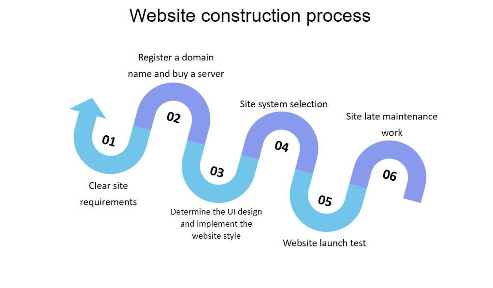
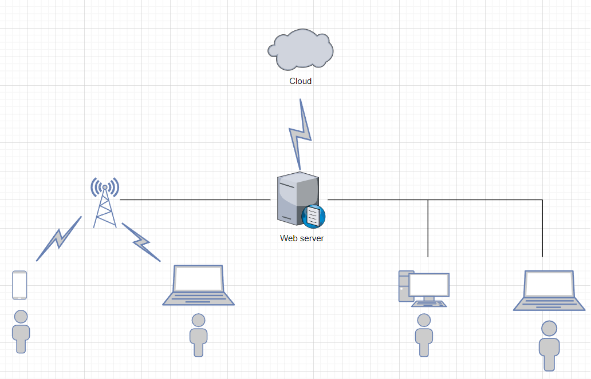

Bill
Website
This website is mainly used for shopping. Merchants can set up their shops on our website, and we are responsible for promoting them and acting as a shopping intermediary. The website is connected to the cloud, and customers place orders through mobile devices or wired devices. The information of customers' orders will be transmitted to the server of the website through the cloud, and the server will deliver delivery information to merchants through various channels. We only need to maintain the operation of the website to charge corresponding service fees to merchants.
 | The name | Software or hardware | model | parameter |
| The server | hardware | ProLiant DL388 Gen9(775450-AA1) | Product type: rack type; CPU series :Intel, Xeon E5 series; Number of memory slots: 24 The network card Embedded network controller :1Gb 361i Ethernet adapter, dual port controller; Network controller :Broadcomm 5720 four-port controller |
| cloud | Software | Ali cloud 2022 | Name: The significance of this attribute is that if multiple data sources exist, they can be distinguished by name during monitoring. If not, a name is generated in the form "DataSource-" + system.identityHashCode (this). In addition, setting this property does not work at least in version 1.0.5, forcing name will cause an error. Url: Indicates the URL used to connect to a database. Such as: Mysql: JDBC: mysql: / / 10.20.153.104:3306 / druid2 The oracle: JDBC: oracle: thin: @ 10.20.149.85:1521: ocnauto |
| firewall | hardware | ASA5515-K8 | ASA 5515-X with SW, 6GE Data, 1GE Mgmt, AC, DES |